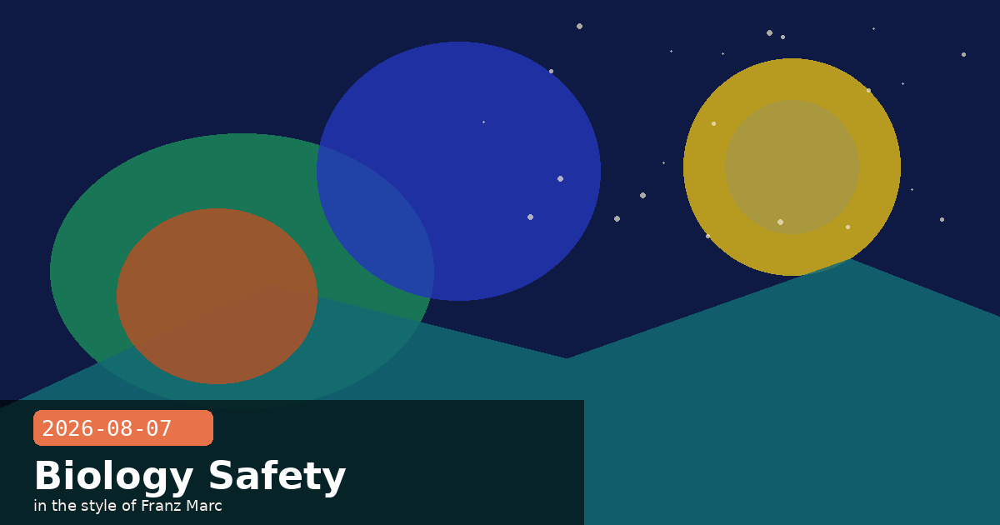

Claude Code Self-Hosted Runner, Cross-Session Agents, and Fable 5 Biology Fix

🧭 Claude Code 2.1.224: Self-Hosted Runner, Cross-Session Messaging, and No More Subagent Cap
Released at 04:00 UTC on August 7, Claude Code v2.1.224 ships three features that meaningfully change how enterprises and multi-agent workflows operate: a self-hosted runner command, cross-session messaging between independent Claude Code sessions, and the removal of the 200-subagent spawn cap.
claude self-hosted-runner
Team and Enterprise customers can now run Claude Code web, mobile, and desktop sessions entirely on their own machines or containers. Sessions run inside the customer's network and can reach internal services — CI systems, private registries, on-premise APIs — without routing data through Anthropic's cloud infrastructure. To start a self-hosted runner:
# Start a self-hosted session runner (Team/Enterprise only)
claude self-hosted-runner
# Sessions will route through this machine rather than Anthropic cloud
# Internal services are reachable as normal
Who needs this?
Organisations with strict data-residency requirements or air-gapped environments where Anthropic's cloud endpoints are blocked. It also meaningfully lowers latency for teams whose internal services are co-located: a runner inside the VPC avoids the cloud round-trip entirely. Check your plan tier before attempting — this is Team/Enterprise only.
Cross-session messaging: SendMessage and ListAgents
Two new tools — SendMessage and ListAgents — allow separate Claude Code sessions to communicate with each other across machines (macOS and Linux). This enables coordinator-worker patterns where a lead session delegates subtasks to specialist sessions and collects their results.
# In the coordinator session — list active sessions this runner knows about
ListAgents()
# Send a message to a named worker session
SendMessage(
to: "session-id-or-name",
content: "Analyse the auth module and return a risk summary"
)
Incoming messages are subject to crossSessionInbound policy settings and optional dialogExpiry — so a worker session can decline unrecognised senders or auto-discard stale messages. Both tools use the same permission model as all other Claude Code tools, so org-level policies apply.
200-subagent cap removed
The previous hard limit of 200 subagent spawns per session is gone. Concurrency and depth limits still apply (the session doesn't get infinite parallelism), but long-running pipeline sessions that previously stalled after spawning 200 workers will now continue without interruption. This change pairs naturally with SendMessage: a coordinator session can now orchestrate far larger agent networks than before.
Other 2.1.224 changes worth knowing
Archive plugin source: Install plugins from HTTPS zip files with optional SHA-256 pinning — useful for air-gapped or internally hosted plugin registries.
Sandbox credential-masking options: JWT-aware masking and AWS SigV4 re-signing for fine-grained control over which credentials appear in tool outputs.
Long project path fix: Paths longer than 200 characters were resolving to wrong session directories — now fixed.
Sandbox trailing-slash bypass fixed: A sandbox filesystem deny rule with a trailing slash could be bypassed — patched.
Paste data fix: Paste content was occasionally attaching wrong data or losing text entirely — fixed.
Claude Codeself-hosted runnercross-session messagingmulti-agententerprise2.1.224subagent cap
🧭 Anthropic Cuts Fable 5 Biology False Positives by 85% — Virology and Toxicology Still Blocked
Anthropic published a detailed post today explaining how it rewrote Claude Fable 5's biology safety classifier after release. The original configuration was triggering excessive fallbacks on routine health and educational queries — routing them to a less capable model rather than answering them directly. The update cuts those fallbacks by approximately 85% across all product surfaces.
What changed
The team rewrote the classifier's ruleset to better distinguish genuinely harmful requests from benign ones, collected expert feedback on edge cases, and retrained the system on updated data. The classifier now permits:
Everyday health questions and patient-facing support
Educational biology content (textbook-level, coursework, general science)
Clinical support for healthcare professionals
The surface-level breakdown of fallback reductions (compared to the original Fable 5 classifier):
Claude.ai: ~67% fewer fallbacks
Cowork: ~55% fewer fallbacks
Claude Code: ~17% fewer fallbacks
Claude Platform (API): ~7% fewer fallbacks
What remains restricted
Fable 5 continues to decline requests in dual-use biological domains where the model could meaningfully uplift a malicious actor:
Toxicology: synthesis of toxic agents at weaponisation scale
Molecular design: de novo design of biological agents with harmful potential
For API developers: what to expect
If your application routes biology-adjacent queries through Fable 5 and was previously seeing stop_reason: "refusal" with category: "bio" on legitimate content, a significant fraction of those will now return normally. You don't need to change your API requests — the change is classifier-side. Do review any hardcoded fallback logic that assumes biology requests always fail; those fallback paths may now be hit far less often.
Anthropic also mentions it is building trusted-access pathways for legitimate frontier researchers who need to work in the still-restricted domains. No timeline or mechanism was given, but the framing suggests a credentialled-researcher programme similar to the External Researcher Access Program for deprecated models.
Fable 5biology safeguardssafety classifierfalse positivesrefusalresponsible AI
🧭 Mid-Conversation Tool Changes: Add or Remove Tools Between Turns Without Breaking Cache
Released as part of the Claude Opus 5 launch on July 24 and now available on four models, mid-conversation tool changes let you dynamically add or remove tools between turns of a live session while preserving prompt-cache hits. The beta header is mid-conversation-tool-changes-2026-07-01.
Supported models
Claude Fable 5 (claude-fable-5)
Claude Mythos 5 (claude-mythos-5)
Claude Opus 4.8 (claude-opus-4-8)
Claude Opus 5 (claude-opus-5)
How it works
Instead of re-sending the full tools array on every turn (which breaks the prompt cache), you inject tool_addition and tool_removal content blocks in a role: "system" message. The model receives an incremental diff of its available tools rather than a complete replacement.
# Python example — add a new tool after the first turn
response = client.messages.create(
model="claude-fable-5",
betas=["mid-conversation-tool-changes-2026-07-01"],
messages=[
{"role": "user", "content": "Analyse this dataset."},
{"role": "assistant", "content": assistant_turn_1},
{
"role": "system",
"content": [
{
"type": "tool_addition",
"tool": {
"name": "run_sql",
"description": "Execute a SQL query against the analytics DB.",
"input_schema": { ... }
}
}
]
},
{"role": "user", "content": "Now run a query to find outliers."}
]
)
Why this matters for agentic apps
Long-running agentic sessions often need to grant or revoke capabilities as a task progresses — for example, adding a code execution tool only after reading a user-uploaded file, or revoking a sensitive write tool once a transaction completes. Previously, any tool change required resending the full tool list, busting the cache and adding tokens to every subsequent turn. With incremental changes, you pay only for the diff. For Fable 5 at its 1M-token context window, that cache preservation can be substantial.